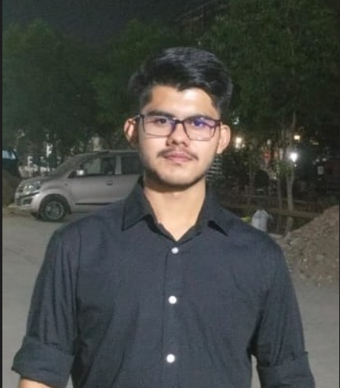

Vedant Singh

Summary
Dedicated and highly motivated undergraduate pursuing a B.Tech in Electronics and Computer Engineering from VIT Chennai. Strong foundation in electronic systems, computer engineering principles, and software development. Proven skills in programming, circuit design, and problem-solving through academic projects and coursework. Enthusiastic about leveraging technical knowledge and analytical abilities to contribute to innovative engineering solutions. Seeking opportunities to apply my skills and gain hands-on experience in a dynamic and growth-oriented environment.
Education
-
Completed schooling from Vidyasagar School,Indore with 93% in Class 10th and 90% in Class 12th.
- Presently persuing my Btech in Electronics and Computer Engineering from VIT Chennai.
Work Experience
- Junior Web Developer
- Developed and maintained a personal portfolio website using HTML, CSS, and JavaScript.
Designed and implemented a responsive e-commerce website prototype with interactive features.
- Collaborated with peers on GitHub to manage version control and workflow.
- Integrated APIs to enhance website functionality, such as fetching real-time data.
Skills
- Programming Languages: Python, C/C++, HTML, CSS, JavaScript
★★★★
- Tools and Technologies: GitHub,LinkedIn,LoremIpsum
★★★
- Soft Skills: Problem-solving, Teamwork, Time Management
★★★★★
Other